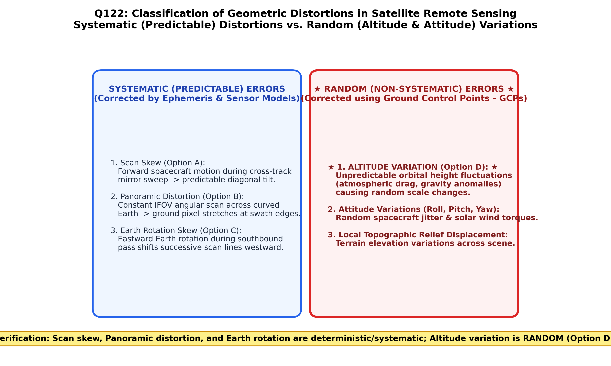

Raw digital satellite imagery contains geometric distortions that displace ground features from their true geographic planimetric coordinates $(X, Y)$. In digital photogrammetry and remote sensing, geometric errors are categorized into two fundamental classes based on their mathematical predictability and determinism (Lillesand & Kiefer; Jensen):
| Error Classification | Physical Nature & Determinism | Underlying Sources | Correction Methodology |
|---|---|---|---|
| Systematic (Predictable) Errors | Deterministic, mathematically predictable, and reproducible. Follow well-defined orbital and physical mechanics. |
• Scan Skew (spacecraft forward motion during cross-track mirror scan) • Panoramic Distortion (angular scan velocity over curved Earth surface) • Earth Rotation (westward shift of ground under southbound polar satellite) • Platform velocity variations & non-linear mirror scan profile. |
Pre-flight & On-board Ephemeris Modeling: Corrected deterministically using mathematical transform equations without requiring Ground Control Points (GCPs). |
| Random (Non-Systematic) Errors (Option D) | Non-deterministic, stochastic, and erratic. Unpredictable high-frequency fluctuations. |
• Altitude Variations (instantaneous perturbations in satellite orbital height due to gravitational anomalies and drag) • Attitude Jitter (high-frequency angular wobble: pitch, roll, and yaw vibrations caused by thrusters, reaction wheels, or solar array flexing) • Topographic Relief Displacement (terrain elevation differences). |
Empirical Polynomial Rectification: Cannot be modeled a priori; requires dense networks of Ground Control Points (GCPs) and Digital Elevation Models (DEMs). |

While Scan skew (Option A), Panoramic distortion (Option B), and Earth rotation (Option C) can be accurately calculated and removed during raw Level-1 processing using satellite velocity, scan rate, and Earth rotation speed ($\omega_E = 7.292 \times 10^{-5}\text{ rad/s}$), altitude variations (Option D) and platform attitude jitter represent random geometric errors that fluctuate unpredictably and require empirical GCP ground matching.
Unplanned perturbations in satellite altitude ($H$) arise from atmospheric drag, non-uniform terrestrial gravitational fields (geoid undulations), and solar radiation pressure. These cause random, unpredictable scale distortions across the image track ($\text{Scale} = f/H$). Because altitude changes are non-systematic and stochastic, they are classified universally as random geometric errors.
During the cross-track scan of an optical mechanical scanner (like Landsat MSS/TM), the spacecraft moves forward along its track. This produces a predictable skew angle $\theta = \arctan(V_{\text{platform}} / V_{\text{scan}})$. It is a classic systematic error fully correctable by affine transform.
Scanning at a constant angular rate ($\omega$) across a flat or curved surface causes ground resolution cells to elongate away from the nadir ($x = H \tan \theta$). This geometric stretching is purely trigonometric and mathematical, making it a predictable systematic error.
As a polar-orbiting satellite moves from north to south, the Earth continuously rotates eastward underneath it at $\approx 0.46\text{ km/s}$ at the equator. This shifts successive scan swaths to the west in a linear, fully predictable manner, defining a textbook systematic error.
| Error Source | Error Type | Visual Image Appearance | Mathematical Formulation / Cause |
|---|---|---|---|
| Earth Rotation Skew | Systematic | Parallelogram skew of raw image frame | $\Delta x = V_e \cdot \cos(\phi) \cdot t_{\text{frame}}$ |
| Panoramic Distortion | Systematic | Compression at nadir, scale elongation at swath edges | $\text{Pixel Dimension} \propto \sec^2 \theta$ |
| Platform Velocity Variation | Systematic | Along-track compression or stretching | Orbital eccentricity ($e > 0$) |
| Platform Altitude Variation | Random | Erratic local scale fluctuations | Gravitational anomalies & atmospheric drag ($\Delta H$) |
| Platform Attitude Jitter | Random | Waviness, distortion of linear features | Roll ($\omega$), Pitch ($\phi$), Yaw ($\kappa$) oscillations |
| Terrain Relief Displacement | Random / Non-systematic | Radial displacement away from high peaks | $d = \frac{r \cdot h}{H}$ |